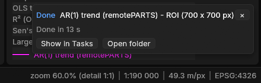
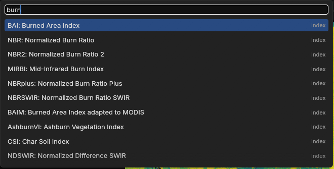
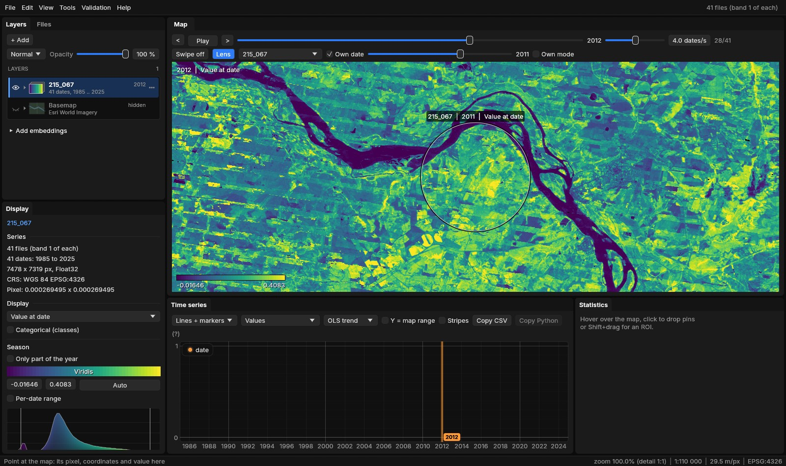

01The example
The series of the Trend test guide: 41 annual Landsat medoid composites of a vegetation index, 1985 to 2025, over the coast of Sergipe and Alagoas in north-eastern Brazil (path/row 215/067), one GeoTIFF per year, 7478 × 7319 pixels in EPSG:4326 at about 30 m. As there, each year is opened through a VRT that declares 0 as no data, in a folder named 215_067, so the layer takes that name. One figure uses the Sentinel-2 series of the STAC guide, for its bands.
The times quoted were measured with Janus' processing threads limited; with all of a machine's cores they are shorter.
02The status bar
A bar along the foot of the window, always in view. On the left, what is under the cursor on the map:
- Pixel
col 6804 row 4252: the active layer's pixel, counted from 0 at the top left.- Coordinates
- In the layer's CRS (
x,yto the centimetre), then in longitude and latitude (WGS 84, six decimals). A layer in degrees, like this one, giveslonandlatonce. - Value
- What the map shows there:
valueand the number,classand its name on a class map, the mean or the trend in those display modes, the largest drop's date, the maps of a run over it, the vector feature under the cursor. (approx.) while the value still comes from the overview rather than the file.
Over the place of section 06, in 2025, it reads col 6804 row 4252 | lon -36.583216 lat -10.283509 | value 0.171732 (the pixel's centre; the value is the file's). With the cursor off the map it says Point at the map: its pixel, coordinates and value here. On the right, from the left:
- Zoom
zoom 60.0% (detail 1:1): screen pixels per pixel of the layer, and what is drawn (the full-resolution tiles, or the overview and its factor).- Scale
- The map's scale on the screen,
1:190 000, at 96 points per inch and rounded to two figures, then the ground a screen point covers,49.3 m/px. On a layer in degrees the metres are those of a degree of longitude at the latitude of the map's centre. - CRS
- The active layer's,
EPSG:4326; the pointer over it gives its full name. - Tasks
- While something runs in the background (a Zeit tool, a deep learning model, a download, an export): how many, the oldest one's name and a progress bar. A click opens Tools → Tasks (or Exports).
The numbers check out by hand. At 60% the map's centre was at 9.37° S, where a pixel of 0.000269° is 29.6 m wide; 29.6 / 0.6 = 49.3 m per screen point, and 49.3 m divided by a point (0.0254 / 96 m) is 186 000, shown as 1:190 000. At 100% over Penedo (10.28° S, section 06) the bar read 29.5 m/px and 1:110 000.
03Tasks and notices
A tool run on the raster works in the background. When a task ends, a notice comes up at the bottom right, above the status bar: Done, the task's name and how long it took, with Show in Tasks and Open folder. A task that failed says Failed, gives the error and a Log button; an export gives Exports. With Janus in the background, the system is also asked for your attention: the taskbar's icon flashes (on a Mac, the Dock's icon bounces).
![Janus after a run of the AR(1) trend (remotePARTS) on an ROI of 700 x 700 pixels of the 215_067 series. Left, the tool's window: its description, the parameters (Trend per Year, Harmonics 0, Missing dates Exact, Significance level 0.05, Min valid observations 4), Run on the raster: ROI, the output folder, Run, and under it Preview and Auto-preview. Top, the Tasks window: the run done, 100%, 13 s, with Log, Folder and Remove. In the middle the map, the ROI outlined in yellow with the significant slopes in white and orange; below, the ROI's mean index from 1985 to 2025 with the fitted trend in magenta; right, the Statistics table, and over it the notice: Done, AR(1) trend (remotePARTS) - ROI (700 x 700 px), Done in 13 s, Show in Tasks, Open folder. The status bar: zoom 60.0% (detail 1:1), 1:190 000, 49.3 m/px, EPSG:4326.](assets/img/workspace/01-run.jpg)

Tasks shorter than 3 s end without a notice, unless they fail. A notice goes after 8 s, a failure's after 30 s, or with its ×; four at most are shown, the newest at the bottom.
04The command palette
Ctrl+K (or Ctrl+Shift+P, or View → Command palette) opens one search over what Janus does: the items of every menu, every tool, the display modes, the panels, the open layers (make one active, zoom to it), the Layers panel's commands, and the spectral indices the active layer has the bands for. Each row gives its category and its keys. Type, then ↑ ↓ and Enter, or click; Esc or a click outside closes it.

- How it matches
- Every word typed must match somewhere: at the start of the name scores most, then at the start of a word in it, then inside a word, then the category, then the description. A short word (six letters or fewer) may also match the name's letters in order:
gtcmatches Go to coordinate.... Among equal matches, the shorter name first. - Used last first
- Without a query, and among matches alike, the twelve commands used last come first (kept in the settings).
- Not now
- A command that cannot run is listed faint, the reason on hover: Blend: Normal when the layer already is, Paste style before a style was copied, an export before a series is open. Exit and Close all come after any other match, so that Enter on a short query does not close anything.
The commands call the same code as the menus: nothing is a copy that can drift. On a series with bands, the indices of the Awesome Spectral Indices join the list, under the category Index, and picking one shows it on the active layer (the calculator guide has more on them).

05Blend modes, groups, styles
The Layers panel is a table of contents: the series, the maps of the runs and the vector layers in one drawing order, the basemap last. Three things joined it in 1.5.
Blend modes
Beside the active layer's opacity, a list sets how its colours combine with what is under it (the layers below and the basemap). The same list is under Blend in a series' menu, in the palette (Blend: Multiply...), and on the command line (--blend multiply).
- Normal
- The layer over the others, with its opacity.
- Multiply
- Darkens by what is under it: the layer's colours tint the imagery, and the imagery's detail shows through.
- Screen
- Lightens: the opposite of Multiply.
- Add
- Sums the colours.
- Darken, Lighten
- Keep the darker or the lighter of the two, channel by channel.
The blending is done by the graphics card's own blending stage, a pipeline per mode, so a mode costs nothing more to draw than Normal.
![The 215_067 series at 2025 drawn with the blend mode Multiply over the Esri World Imagery basemap, at 100% around the lower São Francisco river: the river winding from the left to the bottom in dark purple, sand banks and islands in it, the fields and their boundaries of the imagery visible under the viridis colours of the index, light patches of high values on the upper left. The Layers panel shows Multiply beside the opacity at 100%, the series 215_067 (41 dates, 1985 .. 2025) and the basemap, Esri World Imagery, both visible.](assets/img/workspace/05-multiply.jpg)
Groups
Select rows (Ctrl + click adds one, Shift + click a run of them), then Group the N selected in the menu of one of them, or Group the selected layers in the palette. They go next to each other in the drawing order, under a row of their own named Group 1. The group's eye shows or hides them all, its arrow folds them, a click selects them (Delete then closes them), and its menu renames it, selects its layers, moves it to the top or the bottom, ungroups it (the layers stay where they are) or closes its layers. A row dropped on a member, or on the group's row, joins it; Out of its group takes one out.
Styles
A row's menu has Style:
- Copy style
- A series' display mode, each mode's colormap, the ranges set by hand (the others are computed again from the other layer's own values), the stretch per date, the RGB bands, the opacity, the blend mode, and its classes' names, colours and visibility; a vector layer's colour.
- Paste style
- On the row, or Paste style on the N selected.
- Saved styles
- A name and Save style keep it in the settings; it is then listed in every row's Style menu, given with a click, deleted with its x.
A style made once for a land-cover legend, or for a run's map of years, then goes on every other layer of the kind with two clicks.
06Go to and saved views
Ctrl+G (View → Go to coordinate...) opens a field that takes a place as you have it:
| Type | Means |
|---|---|
-10.283333, -36.583333 | latitude and longitude in decimal degrees (a decimal comma works when no point is used: -10,283333 -36,583333) |
10°17'S 36°35'W, 10 17 S 36 35 W | degrees, minutes and seconds, with the hemisphere's letter or a sign (O for west too) |
24S 764697 8862264, 24 L 764697 8862264 | UTM: the zone with N or S for the hemisphere, or with a latitude band |
EPSG:31984 764697 8862264 | x and y in any EPSG CRS (here SIRGAS 2000 / UTM zone 24S) |
x y | two numbers past the degrees' range: x and y in the layer's CRS (a layer in UTM, say) |
px 6804 4252 | a pixel of the active layer: column, row |
The decimal, comma, UTM and EPSG lines of the table are the same place, and each took the map to it. As you type, the window says where it lands (lat -10.283333, lon -36.583333 -> pixel (6804, 4251), or that it is off the layer). Enter or Go centres the map there, zoomed in to a pixel per screen point at least, with a mark that fades in 8 s and what you typed beside it; Drop a pin there also adds a pin. From the command line: --goto "10°17'S 36°35'W". Place names are not looked up: a coordinate is needed.

Saved views
View → Saved views: a name and Save view keep the area, the date shown and the layers shown. The area is kept as its centre in longitude and latitude and its width in metres, so a view saved on one layer goes back to the same ground on any other, in any CRS (a layer without a CRS keeps pixels). A click on a saved view goes back to it: the date by its label, the layers by their names when any of them is open. They are kept in the settings, listed in the palette as Saved view: name, and deleted with their x.
07Minimap and lens
- Minimap
- M (View → Minimap,
--minimap): the active layer whole in the map's bottom right corner, 170 points on its longer side, the view as a rectangle on it. A click or a drag on it moves the map there. It is drawn again only when what it shows changes. - Lens
- L (View → Lens, or Lens on the swipe's bar,
--lens): the swipe (C) as a circle that follows the cursor, instead of a divider. Inside the circle, the swipe's comparison; outside, the map. Alt + wheel changes its size (a radius of 110 points at first, from 24 to 800) without zooming the map.
The comparison is set on the swipe's bar, as for the swipe: another open layer, or the same one at another date (Own date) or in another display mode (Own mode). With a single series open it starts at the date before the one shown.


The lens suits questions about one place: is this patch new, was the stripe there the year before? The swipe suits comparing two halves of the view. L goes back from the lens to the divider, C turns either off.
08Where a result came from
Every run of a Zeit tool, of a deep learning model applied and of the raster calculator writes provenance.json in its folder, next to job.json, job.log and its maps. It holds the tool, the versions of Janus and of Zeit (zeit-core's revision), when the run started, how long it took and how it ended, the series it read (its files, the band, index or expression shown, the quality mask), the scope and the window in pixels, the parameters (with those not at the tool's default named), what else it took (a model's file, the calculator's text), and the files it wrote. Here is the run of section 03, shortened:
{
"format": 1,
"kind": "zeit",
"tool": "ar_trend",
"tool_name": "AR(1) trend (remotePARTS)",
"janus": "1.6.0",
"zeit": "2.0.0",
"zeit_core": "8cfbdbf5ecb2ab740332584749d26c18b724b24a",
"started": "2026-10-29 00:00:11 UTC",
"seconds": 13.4082103,
"state": "done",
"series": {
"name": "215_067",
"dates": 41, "first": "1985", "last": "2025",
"width": 7478, "height": 7319, "crs": "EPSG:4326",
"files": ["215_067\\landsat_medoid_1985.vrt", ... 41 files]
},
"scope": "ROI",
"window": [1000, 500, 1700, 1200],
"params": {"alpha": 0.05, "gaps": "exact", "harmonics": 0, "min_valid": 4, "time": "year"},
"changed": [],
"outputs": [{"name": "Significant slope", "path": "...\\ar_trend_sig_slope.tif"}, ... 8 maps],
"python": "rerun.py"
}In the Layers panel, the menu of a run's map (or of a series a run or the calculator wrote) gives:
- Provenance...
- All of it in a window, the parameters changed from the default in the accent colour.
- Run again with these parameters...
- The tool's window with the run's parameters and scope. On the same series the scope The run's window is the very window it ran on, even if the ROI has moved or gone since. A deep learning run gets its model and post-processing back, the calculator its text.
- Copy Python of the run
- For a Zeit tool,
rerun.py, written beside the run: it reads the series from its files over the run's window with rasterio, makes the same Zeit call with the same parameters, and writes every map the call returns as a GeoTIFF on the window's grid, in a folderpythonof the run. It needs numpy, rasterio, xarray and zeit-cdts. - Open folder
- The run's folder.
The run above has a script of 133 lines; its call is zeit.ar_trend(series, time='year', harmonics=0, gaps='exact', min_valid=4, nodata=None, n_jobs=-1) on the 700 × 700 pixels of the window. Run with Zeit's Python (with n_jobs=2, to use two threads), it wrote 11 maps. The six that match maps of Janus' run (the slope, its p-value, t and standard error, the intercept and the AR(1) rho) were equal to them on all 490 000 pixels, to the last bit.
A record per run
The provenance is written as the run starts and completed when it ends, so a run cancelled or failed says so. A preview (next section) writes none: it is meant to be thrown away.
09Preview on a corner
A Zeit tool's window has Preview under Run (see the figure of section 03): the tool on the ROI (its bounding box) or, without an ROI, on at most 256 × 256 pixels at the centre of the view, before the whole scene. Its maps open as layers named Preview: ..., marked preview in the Layers panel; its window is dashed on the map, labelled Preview... while it runs and preview when done. The next preview replaces it: the earlier one is cancelled if still running, and its maps and folder (under Janus' work folder) are deleted. Closing the tool's window removes its preview.
- Auto-preview
- Previews again 0.4 s after a parameter changes, when Zeit's estimate for the preview's window is 3 s or less. Under the buttons the window gives that estimate; when the parameters have changed since the preview on the map, it says so.
- Then Run
- Runs on the scope chosen (Whole image, Visible area, ROI), as before.
The estimate is of the computation
Zeit's estimate times the tool on samples of pixels read beforehand; reading the files is not in it. In section 03 it said under a second for the 700 × 700 pixels, and the run took 13 s, reading 41 GeoTIFFs stored in strips of one row. Read the estimate as a lower bound when the files are slow to read.
10Projects and the last session
File → New project, Open project..., Save project (Ctrl+S), Save project as... and Recent projects (the last ten). A project is a .janus file, JSON with a format number, that keeps:
- The layers
- The series in their drawing order (their files, the band, index or expression, the quality mask, the date shown, the style, opacity, blend mode and visibility), the vector layers (colour, visibility), the runs' maps (their GeoTIFFs, colours, range, and the run's folder with its provenance), the groups and the active layer.
- The work on them
- The pins, the ROI (a box or a polygon) and the transect.
- The window
- The view, the swipe or lens, the map panels, the basemap, the saved views and the season.
Each file is kept both relative to the project's file and absolute, the relative one tried first, so a folder with a project and its data can be moved to another disk or machine and still open. Opening a project opens its layers one at a time, as File → Open would, each with its state; a file not found leaves its layer out with a notice (Project opened without some of its layers), and the rest opens. A .janus file also opens from File → Open, dropped on the window, or from the command line: jn work.janus.
The window's title gives the project's name, with a * when it has changes not saved. New project and Open project... over such changes ask first: Save, Discard or Cancel.
The last session
Closing Janus does not ask anything. The session, changes included, is kept every minute and at exit (last-session.janus beside Janus' other data, %LOCALAPPDATA%\Janus on Windows), and reopened at the next start when Janus is opened without files: the layers, their styles, the view, as they were. Settings → Reopen the last session at start turns it off.
Ctrl+S saves the project
Before 1.6, Ctrl+S saved the map on top as a GeoTIFF. That is now Save as GeoTIFF in the map's menu; Ctrl+Shift+S still saves every output of a run.
11Undo
Ctrl+Z undoes the last change to the layers; Ctrl+Shift+Z or Ctrl+Y redoes it. The Edit menu (and the palette) says what: Undo Opacity of 215_067, Undo Close 215_067, Undo Layer order.
| A step | Not a step |
|---|---|
| closing or opening a layer (a series, a vector layer, a run's map) | panning and zooming |
| its style, colours, opacity and blend mode | the date shown |
| showing or hiding it, renaming it | another layer made active |
| the drawing order and the groups | the panels, the swipe, the basemap |
| the pins, the ROI and the transect | the saved views and the season |
A layer closed by mistake comes back by Ctrl+Z in its place, with its files, band, style and date, opened again as a project opens its layers. A slider or a layer dragged is one step, whatever the frames in between: nothing is recorded while a button is held. The last 100 steps are kept; New project and opening a project start the history again. A text field keeps its own Ctrl+Z, and drawing an ROI polygon or a transect its own Backspace for the last vertex.
12Keys
| Keys | Does |
|---|---|
| Ctrl+K, Ctrl+Shift+P | the command palette |
| Ctrl+G | Go to a coordinate |
| M | the minimap on or off |
| L | the lens on or off; Alt + wheel: its size |
| C | the swipe on or off |
| Ctrl+S | save the project |
| Ctrl+Shift+S | save every output of a run |
| Ctrl+Z | undo |
| Ctrl+Shift+Z, Ctrl+Y | redo |
| Ctrl+J | the Exports window |
| Ctrl+, | Settings |
Help → Shortcuts and usage lists them all, with the map's own keys.
13References
- Ives, A. R., Zhu, L., Wang, F., Zhu, J., Morrow, C. J., Radeloff, V. C. (2021). Statistical inference for trends in spatiotemporal data. Remote Sensing of Environment, 266, 112678. doi:10.1016/j.rse.2021.112678 (the AR(1) trend run in this guide; see the Trend test guide).
- Montero, D., Aybar, C., Mahecha, M. D., Martinuzzi, F., Söchting, M., & Wieneke, S. (2023). A standardized catalogue of spectral indices to advance the use of remote sensing in Earth system research. Scientific Data, 10, 197 (the Awesome Spectral Indices).
- Esri World Imagery basemap: Esri, Vantor, Earthstar Geographics, and the GIS User Community.
- Zeit: the library behind the tools of Janus, whose Python
rerun.pycalls. - The full reference of the window: docs/usage.md.